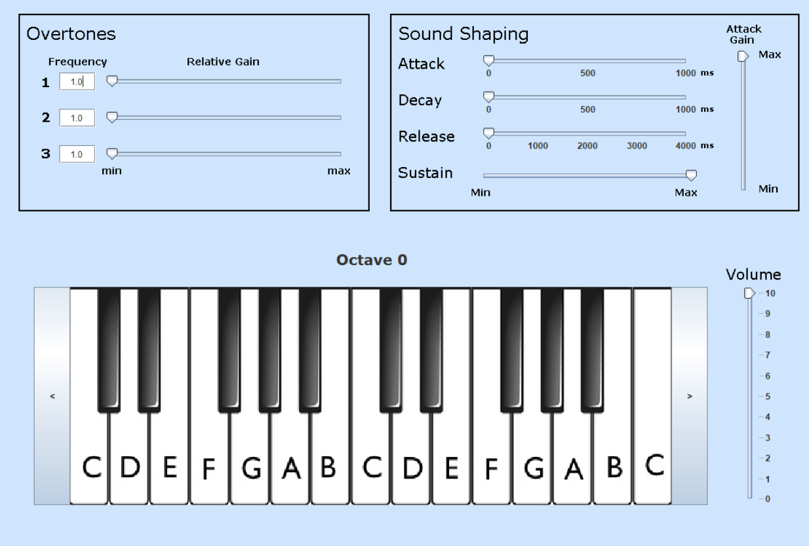

Developed a Python application using Tkinter, retrieving historical stock data using Alpha Vantage API, and visualizing trends through Matplotlib and Seaborn graphs. Implemented a news aggregation feature within the application, utilizing Stock Data API to fetch and display current stock-related news in a user-friendly format.
Designed and developed a Java application tailored for food and drink purchases, with a particular focus on donuts and coffee.
Assembled an offline e-commerce site for buying and selling items, specifically within the desktop, monitor, and keyboard categories.
Implemented a Java application where the user is allowed to digitally play notes on the GUI using their mouse. Users can adjust the octave of the notes as well as the attack, decay, sustain, and release of the played notes. Additionally, users also have the option to play harmonics and adjust the master volume.
Constructed a C# application that simulates an ATM. Users were allowed to make an account in which they could log in and out within the application. Once logged in, users had the option of depositing, withdrawing, checking their balance, and checking their account history. Each account would have its data saved locally.